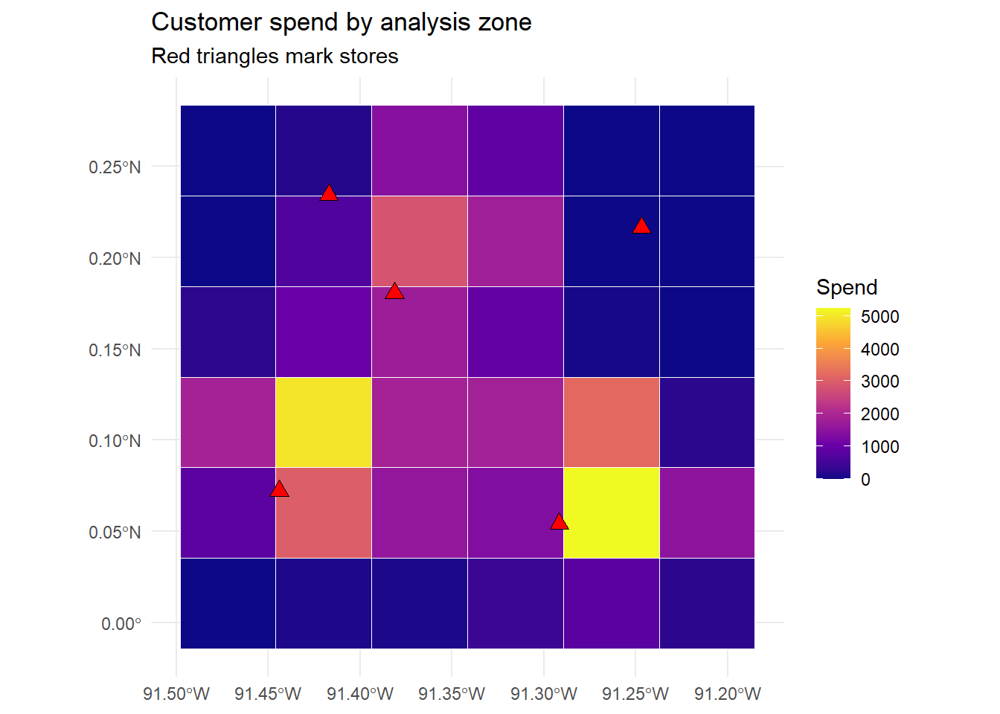

flowchart LR RP["Represent<br/>points, lines, polygons<br/>on a shared CRS"] --> MS["Measure relations<br/>distance, containment,<br/>adjacency, overlap"] MS --> DG["Diagnose dependence<br/>Moran's I"] DG --> SM["Model it<br/>spatial regression,<br/>lag or error"] DG --> GE["Design around it<br/>geo-experiments,<br/>randomized markets"]
52 Geospatial and Location Data
Marketing happens somewhere. A customer walks past a storefront, a delivery van threads a route, a billboard faces one direction and not another, a smartphone broadcasts its coordinates to an ad exchange, and a trade area swells or shrinks as a competitor opens across the street. For most of the discipline’s history this where was treated as background: a control variable at best, a nuisance at worst. What has changed is that location is now data in the same operational sense that text (Chapter 45) and images (Chapter 47) are data. A point on the earth becomes a pair of coordinates, a customer becomes a point pattern, a market becomes a polygon, and the spatial relations among them, who is near whom, which areas border which, how demand decays with distance, become quantities a model can ingest. This chapter is about turning the where into machine-readable geometry and about the methods that respect what makes spatial data peculiar.
The peculiarity is worth stating at the outset, because it organizes everything that follows. Spatial observations are not independent draws. Tobler’s so-called first law of geography puts it plainly: everything is related to everything else, but near things are more related than distant things (Tobler 1970, Economic Geography 46, 234-240, doi:10.2307/143141). Two stores a block apart cannibalize each other; two census tracts that touch share commuters, climate, and culture; a geo-targeted campaign in one zip code spills into the next. This spatial dependence breaks the independence assumption underneath ordinary regression, inflates apparent precision, and, if ignored, manufactures findings out of geography itself. The same dependence is also the signal that trade-area models, geodemographic segmentation, and geo-experiments are built to exploit. The analyst’s task is to represent geometry correctly, measure spatial relations honestly, and then either model the dependence or design around it. Figure 52.1 previews that sequence of tasks.
The chapter proceeds from applications to representation to method. It surveys the marketing problems for which location is the central variable, fixes how spatial data is stored and manipulated, and then develops the workhorse computations, distance and trade-area analysis, spatial autocorrelation and spatial regression, and geo-experiments, each with runnable R. It closes with the data sources and privacy regime that govern location data in practice and with the frontier. The runnable code uses the modern simple-features stack (sf), the current standard for vector spatial data in R (Pebesma 2018, The R Journal 10(1), 439-446, doi:10.32614/RJ-2018-009), and avoids the retired sp/maptools lineage entirely.
52.1 Applications: Where Location Is the Variable
Location data enters marketing wherever a decision turns on physical space. Nine application families recur, and they motivate the methods in the rest of the chapter.
Trade-area analysis and site selection. A store’s trade area is the geographic region from which it draws the bulk of its customers, and estimating it is the oldest quantitative use of location in marketing. The foundational model is Huff’s gravity formulation, in which the probability that a consumer at location \(i\) patronizes store \(j\) rises with the store’s attractiveness (size, assortment) and falls with the travel cost to reach it (Huff 1964, Journal of Marketing 28(3), 34-38, doi:10.2307/1249154; Huff 1963, Land Economics 39(1), 81-90, doi:10.2307/3144521). Site selection inverts the problem: given candidate locations, predict the trade area, the captured demand, and the cannibalization of existing stores, then choose where to build.
In-store paths. The same spatial logic applies inside the store, at a resolution the trade-area literature cannot reach. Tracking shoppers through a grocery store and modeling the path and the basket jointly, Hui, Bradlow, and Fader (2009) are able to test behavioral hypotheses—travelling-salesman efficiency, the pull of unplanned categories, the effect of proximity on purchase—that survey and scanner data leave inaccessible, because those data record what was bought but not where the shopper was when they decided. Path data is where geospatial method meets shopper marketing, and the agenda connecting the two is mapped in Shankar et al. (2016).
Geo-targeting and geo-experiments. Digital advertising can be aimed at, and withheld from, specific geographies, which makes geography both a targeting instrument and an experimental one. This is now one of the best-developed empirical literatures in marketing. Field experiments establish that mobile targeting—timing and placing offers by a consumer’s location—lifts redemption and sales (Luo et al. 2014), that effectiveness is hyper-contextual, rising with situational factors such as physical crowdedness on a commute (Andrews et al. 2016), and that targeting on a consumer’s trajectory (the sequence of places visited) outperforms targeting on the current location alone (Ghose, Li, and Liu 2019). Promotions can be conditioned on proximity to a focal or a competitor’s store, a tactic known as geo-conquesting (Fong, Fang, and Luo 2015), and competitors can target each other’s customers with smartphone coupons, turning location into a strategic price-discrimination instrument (Dubé et al. 2017). Which product categories mobile advertising actually moves is itself an empirical question, the answer depending on category and consumer context (Bart, Stephen, and Sarvary 2014). More broadly, location interacts with targeting and obtrusiveness in display advertising (Goldfarb and Tucker 2011), with physical colocation networks that predict ad response (Zubcsek, Katona, and Sarvary 2017), with interface design in location-based pull advertising (Molitor et al. 2020), and with the cross-channel spillovers that link online and offline sales (Dinner, Van Heerde, and Neslin 2013); even broad targeted-discount programs function partly as advertising (Sahni, Zou, and Chintagunta 2017). Because regions can be randomized into treatment and control, geography also supports clean field experiments at the market level, the basis of geo-lift designs discussed in Section 52.6.
Mobile location and footfall data. Smartphones emit location through GPS, cell-tower triangulation, Wi-Fi, and bluetooth beacons. Aggregated, these signals measure footfall, the count of devices visiting a place over time, which serves as a proxy for store visits, dwell time, and cross-shopping. Foot-traffic context varies systematically across micro-locations and retail-center types (Philp, Dolega, Singleton, and Green 2022, Applied Spatial Analysis and Policy 15(1), 161-187, doi:10.1007/s12061-021-09396-1). Mobile data also revealed that the mobile internet is behaviorally distinct from the desktop internet: search costs are higher, ranking effects stronger, and local activities more salient (Ghose, Goldfarb, and Han 2013, Information Systems Research 24(3), 613-631, doi:10.1287/isre.1120.0453).
Store catchment and cannibalization. Related to trade area but operationally distinct, catchment assigns each customer or demand unit to a serving store, usually the nearest or the most attractive, and then aggregates demand by store. Catchment maps drive labor scheduling, inventory, and the cannibalization accounting that any new-store decision requires.
Geodemographics. Geodemographic systems classify small areas (census tracts, postal zones) into lifestyle segments by combining demographic, socioeconomic, and behavioral data, on the premise that neighbors resemble one another. The approach has a long applied history and a continuing research program spanning the United States and United Kingdom (Singleton and Spielman 2014, The Professional Geographer 66(4), 558-567, doi:10.1080/00330124.2013.848764). Geodemographic codes feed direct mail, media planning, and site selection.
Delivery and logistics. Last-mile delivery, service-territory design, and route optimization are spatial-marketing problems wherever delivery speed and cost are part of the value proposition. The same distance and accessibility primitives that define trade areas define delivery zones, surge regions, and the isochrones (equal-travel-time contours) that quick-commerce firms advertise.
Out-of-home advertising. Billboards, transit panels, and place-based screens are inherently geographic media: their value depends on the traffic that passes a fixed location and the composition of that traffic. Programmatic out-of-home now prices inventory using footfall and mobility data, turning a classically untargeted medium into a location-data application.
Predictive allocation of a scarce field resource. A distinct family of problems asks not where demand is but where the next events will fall, so that a limited stock of mobile capacity, patrol vehicles, service technicians, couriers, loss-prevention staff, merchandising reps, can be positioned in advance. The canonical formulation is predictive hotspot mapping: estimate a forward-looking intensity surface from historical event locations and times, rank small areas by it, and send the resource to the top of that ranking. The reference application is data-driven policing, where Sriram, Sinha, and Choudhary (2026) build a nonparametric spatio-temporal kernel-density model of crime and deploy it with the Delhi police department to assign patrol vehicles, and where randomized field trials have tested the allocation itself rather than only the forecast (Mohler et al. 2015). The machinery is indifferent to what the points represent: swap crime reports for service calls, stockouts, delivery failures, or competitor promotions and the same intensity surface ranks the areas a field organization should cover first.
Local versus electronic competition. Whether a consumer buys online or locally depends on where the consumer lives relative to physical retail, an interaction between geography and channel (Forman, Ghose, and Goldfarb 2009, Management Science 55(1), 47-57, doi:10.1287/mnsc.1080.0932). Geography therefore shapes not only which store but which channel, with direct consequences for pricing and assortment.
Note
The unifying abstraction is that a marketing object acquires a geometry (a point, a line, or a polygon) and a coordinate reference system that fixes what the coordinates mean. Once objects share a coordinate system, the spatial relations among them, distance, containment, adjacency, overlap, become computable, and the marketing question reduces to a query or a model over those relations.
52.2 Spatial Data and Its Representation
Spatial structure is not a nuisance to be controlled away but a source of marketing signal, and the agenda for spatial models in marketing—demand that is correlated across nearby locations, spillovers between trade areas, and the joint modeling of where consumers are and what they buy—was set out by Bradlow et al. (2005). Like every modality in this part (Balducci and Marinova 2018), the work begins by turning the raw artifact, here a coordinate, into a representation a model can speak about. Vector spatial data has three ingredients: geometry, attributes, and a coordinate reference system (CRS). The geometry is the shape, a point for a store or a customer, a line for a road or a route, a polygon for a trade area or a census tract. The attributes are the ordinary columns of a data frame: a store’s revenue, a tract’s population. The CRS is the contract that says what the coordinate numbers mean. Longitude-latitude pairs in degrees (the EPSG:4326 system, often called WGS84) live on a sphere, so Euclidean distance between them is meaningless; a projected CRS maps the curved earth onto a plane in meters or feet so that distances and areas can be computed with ordinary arithmetic. Mismatched or missing CRS information is the single most common source of silent error in applied spatial work, and the rule is simple: never compute a distance in degrees, and never overlay two layers without confirming they share a CRS. Figure 52.2 summarizes these ingredients and the CRS distinction on which computation rests.
flowchart TB VL["Vector spatial layer"] --> GM["Geometry"] VL --> AT["Attributes<br/>store revenue,<br/>tract population"] VL --> CR["Coordinate reference system<br/>what the coordinates mean"] GM --> PT["Point<br/>store, customer"] GM --> LN["Line<br/>road, route"] GM --> PL["Polygon<br/>trade area, census tract"] CR --> GG["Geographic, EPSG:4326<br/>degrees on a sphere:<br/>no Euclidean distance"] CR --> PJ["Projected, meters on a plane:<br/>distances and areas computable"]
The sf package implements the Open Geospatial Consortium simple features standard, storing a layer as a data frame with one list-column of geometries, so that every dplyr and ggplot2 idiom carries over (Pebesma 2018, doi:10.32614/RJ-2018-009). The demonstration below simulates a small market: a set of stores and a larger set of customers, each with coordinates, attached to a projected CRS so that subsequent distances are in meters.
Code
library(sf)
library(ggplot2)
library(dplyr)
set.seed(56)
# A synthetic metropolitan market on a projected grid measured in meters.
# We work directly in a planar CRS (a Universal Transverse Mercator zone)
# so that Euclidean distance in the coordinate units IS distance in meters.
utm <- 32616 # EPSG:32616, WGS84 / UTM zone 16N (planar, units = meters)
# Five stores placed across a roughly 30 km x 30 km area (coordinates in meters).
stores <- data.frame(
store_id = paste0("S", 1:5),
x = c( 5000, 22000, 12000, 27000, 8000),
y = c( 8000, 6000, 20000, 24000, 26000),
sqft = c(18000, 42000, 25000, 12000, 30000) # store size (attractiveness)
)
stores_sf <- st_as_sf(stores, coords = c("x", "y"), crs = utm)
# 600 customers drawn from three spatial clusters (neighborhoods) plus noise,
# so the point pattern is realistically clumped rather than uniform.
n <- 600
centers <- data.frame(cx = c(8000, 24000, 15000),
cy = c(10000, 8000, 23000))
grp <- sample(1:3, n, replace = TRUE, prob = c(0.4, 0.35, 0.25))
cust <- data.frame(
cust_id = 1:n,
x = rnorm(n, centers$cx[grp], 3500),
y = rnorm(n, centers$cy[grp], 3500),
spend = round(rlnorm(n, log(60), 0.5), 2) # monthly spend, skewed
)
cust_sf <- st_as_sf(cust, coords = c("x", "y"), crs = utm)
cat("Stores:", nrow(stores_sf), " Customers:", nrow(cust_sf), "\n")
#> Stores: 5 Customers: 600
cat("CRS units:", st_crs(utm)$units, "\n")
#> CRS units: m
print(st_bbox(cust_sf))
#> xmin ymin xmax ymax
#> -1031.781 -1603.173 33883.222 31441.451The objects stores_sf and cust_sf are simple-features data frames: ordinary columns plus a geometry column the package understands. Because the CRS is a projected one in meters, every distance computed below is a real distance, not an uninterpretable difference of degrees.
52.3 Distance, Catchment, and Trade-Area Analysis
With a shared CRS in place, the core spatial primitives are immediate. The distance from each customer to each store is a single call; nearest-store assignment is a row-wise minimum over that distance matrix; and aggregating spend by serving store yields a catchment table. These three steps, distance, assignment, aggregation, are the computational spine of trade-area analysis.
Code
# Full customer-by-store distance matrix (meters). st_distance respects the CRS.
D <- st_distance(cust_sf, stores_sf) # 600 x 5 matrix, units = m
D <- matrix(as.numeric(D), nrow = nrow(cust_sf)) # strip units for arithmetic
# Nearest-store assignment: the index of the minimum distance in each row.
nearest_idx <- apply(D, 1, which.min)
cust_sf$store_id <- stores_sf$store_id[nearest_idx]
cust_sf$dist_m <- D[cbind(seq_len(nrow(D)), nearest_idx)]
# Catchment table: customers, total spend, and median travel distance per store.
catchment <- cust_sf |>
st_drop_geometry() |>
group_by(store_id) |>
summarise(customers = n(),
total_spend = sum(spend),
median_dist_km = round(median(dist_m) / 1000, 2),
.groups = "drop") |>
arrange(desc(total_spend))
print(catchment)
#> # A tibble: 5 × 4
#> store_id customers total_spend median_dist_km
#> <chr> <int> <dbl> <dbl>
#> 1 S2 221 15063. 5.13
#> 2 S1 193 13141. 4.85
#> 3 S3 131 9437. 4.75
#> 4 S5 37 2146. 5.63
#> 5 S4 18 1604. 7.85Nearest-store assignment is the simplest catchment rule, and it implicitly draws a Voronoi tessellation: the plane is partitioned into cells, one per store, each cell being the set of locations closer to that store than to any other. Voronoi catchments assume customers patronize the nearest store and nothing else, which is a useful first approximation but ignores store attractiveness. The Huff gravity model relaxes this by making patronage probabilistic and attractiveness-weighted. For a customer at \(i\) and store \(j\) with attractiveness \(A_j\) (here, square footage) and distance \(d_{ij}\),
\[ P_{ij} = \frac{A_j \, d_{ij}^{-\lambda}}{\sum_{k} A_k \, d_{ik}^{-\lambda}}, \tag{52.1}\]
where the distance-decay exponent \(\lambda > 0\) governs how sharply patronage falls with travel cost. The code below computes Huff probabilities and contrasts the resulting expected demand with the hard nearest-store catchment, exposing how much the attractiveness term redistributes demand toward larger stores.
Code
lambda <- 1.8 # distance-decay exponent (calibrated elsewhere)
A <- stores_sf$sqft # attractiveness = store size
# Huff numerator A_j * d_ij^(-lambda), guarding against d = 0.
num <- sweep((pmax(D, 1))^(-lambda), 2, A, `*`) # 600 x 5
P <- num / rowSums(num) # patronage probabilities
# Expected spend each store captures = sum over customers of P_ij * spend_i.
huff_capture <- colSums(P * cust_sf$spend)
huff <- data.frame(store_id = stores_sf$store_id,
sqft = stores_sf$sqft,
huff_expected_spend = round(huff_capture, 0))
compare <- catchment |>
select(store_id, nearest_spend = total_spend) |>
left_join(huff, by = "store_id") |>
arrange(desc(huff_expected_spend))
print(compare)
#> # A tibble: 5 × 4
#> store_id nearest_spend sqft huff_expected_spend
#> <chr> <dbl> <dbl> <dbl>
#> 1 S2 15063. 42000 16301
#> 2 S3 9437. 25000 9161
#> 3 S1 13141. 18000 8938
#> 4 S5 2146. 30000 5321
#> 5 S4 1604. 12000 1671The two columns tell different stories. Nearest-store assignment is winner-take-all within each Voronoi cell, so a small store can capture a large cell simply by being isolated. The Huff model spreads each customer’s demand across all stores in proportion to attractiveness and inverse distance, so the largest stores claim a disproportionate share even from customers who are nominally closer to a small rival. Which model an analyst trusts is an empirical question settled by calibrating \(\lambda\) against observed patronage, but the contrast itself is the managerial insight: a new large-format store does not merely capture its own cell, it siphons probability mass from every store within its distance-decay reach, which is the cannibalization that site selection must price.
Tip
Accessibility generalizes distance. Straight-line (Euclidean) distance is a crude proxy for travel cost when rivers, highways, and one-way streets intervene. Production trade-area work replaces it with network distance or travel time from a routing engine, and replaces circular buffers with isochrones, polygons of equal travel time. The sf primitives are identical; only the distance metric changes from a closed-form Euclidean formula to a routed query.
52.4 Aggregation to Areas and the Choropleth
Marketing decisions are usually made over areas, sales territories, postal zones, census tracts, not over raw points. Moving from points to areas requires a spatial join: each point is matched to the polygon that contains it, and the points are then aggregated within polygon. This points-in-polygon aggregation is the operation that turns a scatter of customers into a thematic map. The example below overlays a regular grid of analysis zones on the market, joins customers to zones, and draws a choropleth, a map in which each area is shaded by an aggregated value, here total customer spend.
Code
# Build a 6 x 6 grid of square analysis zones covering the market bounding box.
grid <- st_make_grid(cust_sf, n = c(6, 6), what = "polygons")
grid <- st_sf(zone_id = seq_along(grid), geometry = grid)
# Spatial join: assign each customer to the grid cell that contains it,
# then aggregate spend and customer counts to the zone level.
joined <- st_join(cust_sf, grid, join = st_within)
zone_stats <- joined |>
st_drop_geometry() |>
group_by(zone_id) |>
summarise(zone_spend = sum(spend), zone_n = n(), .groups = "drop")
grid <- grid |>
left_join(zone_stats, by = "zone_id") |>
mutate(zone_spend = ifelse(is.na(zone_spend), 0, zone_spend))
ggplot() +
geom_sf(data = grid, aes(fill = zone_spend), color = "white", linewidth = 0.3) +
geom_sf(data = stores_sf, shape = 24, fill = "red", color = "black", size = 3) +
scale_fill_viridis_c(name = "Spend", option = "C") +
labs(title = "Customer spend by analysis zone",
subtitle = "Red triangles mark stores") +
theme_minimal()
The map is more than decoration: it is the object that spatial-statistics methods operate on. The grid’s cells now carry an attribute (zone_spend) and an implicit adjacency structure (which cells touch which), and the next two sections ask whether the spatial pattern in that attribute is more clustered than chance, and how to regress an outcome on covariates without letting the clustering corrupt the inference.
52.5 Spatial Autocorrelation and Spatial Regression
The choropleth invites a question the eye cannot answer reliably: is the high-spend region genuinely clustered, or could a pattern that looks clustered arise by chance from independent draws? Spatial autocorrelation is the formal measure. The most widely used global statistic is Moran’s \(I\) (Moran 1950, Biometrika 37(1/2), 17-23, doi:10.2307/2332142). Given an attribute \(x_a\) on areas \(a = 1,\dots,m\) and a spatial weights matrix \(W\) with entries \(w_{ab}\) encoding which areas are neighbors,
\[ I = \frac{m}{\sum_{a}\sum_{b} w_{ab}} \cdot \frac{\sum_{a}\sum_{b} w_{ab}\,(x_a - \bar{x})(x_b - \bar{x})} {\sum_{a}(x_a - \bar{x})^2}. \tag{52.2}\]
The statistic is a spatially weighted correlation of the attribute with itself across neighboring areas. Values above the expectation \(-1/(m-1)\) indicate positive autocorrelation (neighbors resemble neighbors, the high-spend-near-high-spend pattern Tobler’s law predicts); values below it indicate a checkerboard. The weights matrix \(W\) is a modeling choice, not a given: contiguity (areas that share an edge), \(k\)-nearest-neighbors, or distance-band schemes each encode a different theory of what neighbor means, and the choice can move the conclusion. The code below builds a contiguity weights matrix from the grid with base sf and computes Moran’s \(I\) together with a permutation reference distribution, so the result needs no spatial econometrics package.
Code
# Contiguity weights: areas are neighbors if their polygons touch (share an edge
# or corner). st_intersects on polygons returns exactly this adjacency.
touch <- st_intersects(grid, grid)
m <- nrow(grid)
W <- matrix(0, m, m)
for (a in seq_len(m)) {
nb <- setdiff(touch[[a]], a) # neighbors of a, excluding itself
if (length(nb) > 0) W[a, nb] <- 1
}
W <- W / pmax(rowSums(W), 1) # row-standardize so weights per area sum to 1
x <- grid$zone_spend
xc <- x - mean(x)
S0 <- sum(W)
moran_I <- (m / S0) * sum(W * outer(xc, xc)) / sum(xc^2)
# Permutation null: reshuffle attribute across areas, recompute I many times.
set.seed(56)
perm <- replicate(999, {
xp <- sample(xc)
(m / S0) * sum(W * outer(xp, xp)) / sum(xp^2)
})
p_perm <- (1 + sum(perm >= moran_I)) / (1 + length(perm))
cat("Moran's I :", round(moran_I, 3), "\n")
#> Moran's I : 0.134
cat("Expectation under H0:", round(-1 / (m - 1), 3), "\n")
#> Expectation under H0: -0.029
cat("Permutation p-value :", round(p_perm, 3), "\n")
#> Permutation p-value : 0.042A Moran’s \(I\) comfortably above its null expectation, with a small permutation \(p\)-value, says the spend surface is spatially clustered: knowing a zone’s neighbors tells you something about the zone. That diagnosis matters because it invalidates ordinary regression. If the residuals of a model are spatially autocorrelated, the ordinary-least-squares standard errors are wrong, typically too small, so \(t\)-ratios are inflated and spurious significance follows. The remedy is spatial regression, which writes the dependence into the model rather than leaving it in the error.
Two canonical specifications dominate (Anselin 1988, Spatial Econometrics: Methods and Models, Springer, doi:10.1007/978-94-015-7799-1). The spatial lag model adds a spatially weighted average of the outcome itself as a regressor,
\[ y = \rho W y + X\beta + \varepsilon, \tag{52.3}\]
capturing genuine spatial spillover (an outcome in one area drives the outcome in its neighbors, as when a store’s promotion lifts traffic next door). The spatial error model instead places the dependence in the disturbance,
\[ y = X\beta + u, \qquad u = \lambda W u + \varepsilon, \tag{52.4}\]
appropriate when the clustering reflects omitted, spatially smooth variables (local income, weather, culture) rather than true interaction. Distinguishing the two is a substantive question with a real managerial difference, spillover implies that intervening in one area changes its neighbors, omitted-variable clustering does not, and local indicators of spatial association (Anselin 1995, Geographical Analysis 27(2), 93-115, doi:10.1111/j.1538-4632.1995.tb00338.x) decompose the global Moran’s \(I\) into area-specific hot spots and cold spots that map where the clustering lives. Estimation of Equation 52.3 and Equation 52.4 uses maximum likelihood or generalized method of moments and is the province of dedicated spatial-econometrics packages; the modeling discipline, diagnose autocorrelation first, then choose lag versus error on theory, is what the analyst owns. Figure 52.3 lays out that decision.
flowchart TB DX["Autocorrelated residuals<br/>diagnosed via Moran's I"] --> QW["Why do neighbors<br/>resemble neighbors?"] QW -->|"genuine spatial<br/>interaction"| SL["Spatial lag model<br/>y = ρWy + Xβ + ε<br/>intervening in one area<br/>changes its neighbors"] QW -->|"omitted spatially smooth<br/>variables: income,<br/>weather, culture"| SE["Spatial error model<br/>y = Xβ + u, u = λWu + ε<br/>intervention does not<br/>propagate to neighbors"]
Warning
Spatial autocorrelation and the modifiable areal unit problem (MAUP) are distinct hazards that compound. MAUP is the dependence of results on the arbitrary boundaries and scale of the areal units: aggregate the same points to coarser zones, or shift the grid, and correlations, regression coefficients, and even their signs can change. The grid in Section 52.4 was a choice; a different grid would give a different Moran’s \(I\). Robust spatial conclusions are checked across sensible alternative aggregations, never reported from a single arbitrary partition.
52.6 Geo-Experiments and Geo-Lift
The cleanest causal use of geography turns regions into experimental units. In a geo-experiment, a set of geographic markets (designated market areas, metros, or zip clusters) is randomized into treatment and control, the campaign runs only in treated markets, and the incremental outcome, geo-lift, is the difference in aggregated response between treated and control geographies, net of their baseline trajectories. Geography is an attractive randomization unit precisely because of the spillover this chapter has emphasized: an individual-level holdout leaks, since a treated user talks to an untreated neighbor and a control user still sees the billboard, whereas a market-level holdout contains most of the contamination inside the treated region. The cost is statistical power, there are far fewer markets than users, so geo-designs lean on pre-period data, matched market pairs, and time-series counterfactuals to squeeze precision from a small number of large units.
The estimand is an incrementality, and the workhorse counterfactual is a synthetic control or a Bayesian structural time-series model that predicts each treated market’s untreated trajectory from a weighted basket of control markets, attributing the gap after launch to the campaign. The simulation below builds a minimal geo-lift design, half the markets treated with a known multiplicative lift, and recovers the effect with a difference-in-differences contrast on the pre/post market panel, the simplest unbiased geo-lift estimator when assignment is random.
Code
set.seed(56)
G <- 40 # number of geographic markets
Tn <- 24 # weeks; campaign launches at week 13
true_lift <- 0.08 # +8% in treated markets, post-launch
market <- rep(1:G, each = Tn)
week <- rep(1:Tn, times = G)
treated <- rep(rbinom(G, 1, 0.5), each = Tn) # random assignment of markets
post <- as.integer(week >= 13)
base <- rep(rlnorm(G, log(1000), 0.4), each = Tn) # market size heterogeneity
# Baseline sales: market level + common weekly trend + noise.
sales <- base * (1 + 0.01 * week) * exp(rnorm(G * Tn, 0, 0.05))
# Treatment effect: multiplicative lift applied only to treated markets post-launch.
sales <- sales * (1 + true_lift * treated * post)
geo <- data.frame(market, week, treated, post, sales)
# Difference-in-differences on log sales: the interaction is the geo-lift.
fit <- lm(log(sales) ~ treated + post + treated:post, data = geo)
est_lift <- exp(coef(fit)["treated:post"]) - 1
cat("True geo-lift :", true_lift, "\n")
#> True geo-lift : 0.08
cat("Estimated geo-lift :", round(est_lift, 4), "\n")
#> Estimated geo-lift : 0.0746
cat("DiD interaction SE :",
round(summary(fit)$coefficients["treated:post", "Std. Error"], 4), "\n")
#> DiD interaction SE : 0.0422The difference-in-differences interaction recovers the planted lift because random assignment of markets makes treatment independent of the baseline trajectory, so the common-trend assumption holds by construction. Real geo-experiments are harder: a firm rarely controls enough comparable markets to randomize cleanly, market sizes are wildly heterogeneous (the base term above), and contamination across adjacent markets reintroduces the very spillover the design was meant to contain. These are why production geo-lift leans on matched-market and synthetic-control machinery rather than a bare difference of means, and why power analysis precedes any geo-test. The conceptual payoff remains: geography converts an observational targeting problem into a randomized one, complementing the user-level experimentation of Chapter 42 at a spatial scale that respects spillover.
52.7 Mobile-Location Data and Privacy
The richest contemporary location signal comes from mobile devices, and it is also the most ethically and legally fraught. A smartphone reports position through GPS, cell-tower triangulation, Wi-Fi and bluetooth scans, and the IP address of its connection, at an accuracy ranging from a few meters outdoors to tens of meters indoors. Software development kits embedded in apps stream these coordinates to data brokers, who assemble device-level mobility traces, sequences of timestamped locations, and resell them for footfall measurement, attribution, audience building, and the hyper-contextual targeting that conditions an ad on where and when a person is (Andrews, Luo, Fang, and Ghose 2016, Marketing Science 35(2), 218-233, doi:10.1287/mksc.2015.0905; Luo, Andrews, Fang, and Phang 2014, Management Science 60(7), 1738-1756, doi:10.1287/mnsc.2013.1836).
The privacy hazard is acute and specific to location. Mobility traces are uniquely identifying even when stripped of names: a handful of timestamped points, typically home at night and work by day, single out an individual from millions, so “anonymized” location data is anonymized in name only. Location also exposes sensitive inference, visits to clinics, places of worship, protests, or a competitor’s headquarters, that consumers never consented to reveal. These properties have made location a focus of regulation. The EU General Data Protection Regulation treats precise location as personal data requiring a lawful basis and, often, explicit consent; the California Consumer Privacy Act and its successors grant rights to access and delete it; mobile platforms have tightened operating-system permissions toward per-app, per-session, and coarse-location options; and enforcement actions against brokers trading in sensitive-place visits are accelerating. The methodological response is to design for privacy: aggregate to areas large enough to prevent re-identification (the points-to-zones move of Section 52.4 is itself a privacy control), add noise under formal differential privacy guarantees as national statistical agencies now do for census geographies, and prefer on-device or federated computation that never centralizes raw traces. These tools connect directly to the broader treatment of consumer privacy in Chapter 25; here the point is that location data’s analytical power and its privacy risk are two faces of the same property, that where you are is a near-complete description of who you are.
52.8 Industry and Production Practice
Translating these methods into deployed systems means confronting the data-vendor ecosystem and the engineering stack that supports spatial work at scale.
Location-data vendors. The supply chain has tiers. Base-map and boundary providers supply the geometries (administrative boundaries, road networks, points of interest) on which everything else is layered, ranging from open data such as OpenStreetMap and national census bureaus to commercial map platforms. Geodemographic vendors sell area-level lifestyle classifications and consumer profiles keyed to postal geography. Mobile-location and footfall vendors sell device-level traces and visit panels derived from app SDKs, used for foot-traffic analytics and attribution. Routing and accessibility providers expose travel-time and isochrone APIs that replace Euclidean distance with network reality. A recurring production caution is provenance and consent: footfall panels vary enormously in coverage, representativeness, and the legality of their consent chain, so a panel’s device sample must be weighted to the population it claims to represent and audited for the lawful basis on which its locations were collected.
The spatial stack. Production geospatial analytics typically combines a spatial database (PostgreSQL with the PostGIS extension, or the spatial functions now native to cloud data warehouses) for storage and joins at scale, a tiling and visualization layer for interactive maps, and an analytical layer in R (sf, terra, spdep) or Python (geopandas, shapely, pysal) for modeling. The sf package this chapter uses is the analytical front end of that stack and interoperates with the same simple-features standard the database speaks, so a trade-area model prototyped in R ports to a warehouse query with the geometry semantics preserved (Bivand, Pebesma, and Gómez-Rubio 2013, Applied Spatial Data Analysis with R, Springer, doi:10.1007/978-1-4614-7618-4).
Engineering pitfalls. Three errors dominate production incidents. The first is CRS mismatch, overlaying or measuring across layers in different coordinate systems, which the discipline of Section 52.2 prevents. The second is geocoding error: converting addresses to coordinates is imperfect, and a mis-geocoded customer silently corrupts every downstream catchment and choropleth, so geocode quality must be scored and low-confidence matches flagged. The third is scale and aggregation sensitivity, the modifiable areal unit problem of Section 52.5 surfacing as a dashboard whose conclusions flip when the zoom level or zone definition changes. Each is mundane and each routinely sinks an otherwise sound spatial analysis.
Replication resources: spatial analysis
Every spatial computation in this chapter—distance matrices, catchment assignment, the Huff model, choropleth aggregation, Moran’s \(I\) with a permutation null, and the difference-in-differences geo-lift—runs on the open R packages sf (simple features), spdep (spatial weights and autocorrelation), and ggplot2, the de facto standard spatial stack and the reproducible core of the chapter. The empirical mobile-targeting studies cited above (e.g., Ghose, Li, and Liu (2019), Luo et al. (2014), Andrews et al. (2016), Dubé et al. (2017)) rely on proprietary carrier or platform location data that cannot be redistributed, so they rarely ship public replication packages; their value here is as design templates, and any data/code link should be confirmed on the article page rather than assumed.
52.9 Frontier and Expansion
Several directions are actively reshaping geospatial marketing. Trajectory and mobility modeling moves beyond static visit counts to the sequence of places a device traverses, enabling path-to-purchase analysis in physical space that mirrors the clickstream models of online behavior, and inviting the sequence methods of the text and behavioral-data literatures to operate over geographies rather than tokens. Spatial machine learning brings graph neural networks and geographically weighted models to demand prediction, treating areas as nodes in a spatial graph so that the autocorrelation of Section 52.5 becomes an architectural feature rather than a nuisance to be corrected. Satellite and aerial imagery turns the image-as-data methods of Chapter 47 onto the earth itself, estimating economic activity, parking-lot fullness, and construction from pixels, a remote-sensing channel that needs no consenting device and so sidesteps part of the privacy problem while raising new ones. Privacy-preserving geospatial analytics, differentially private aggregates, on-device computation, and synthetic mobility data, is becoming a precondition rather than an enhancement as regulation tightens. And the fusion of location with the other modalities of this part, geotagged images, geolocated text, footfall paired with transaction logs, points toward the multimodal models in which where is one channel among several, each a generated feature carrying its own measurement error. The through-line is the one this chapter opened with: location is data, near things are more related than distant ones, and the methods that turn that fact into insight are the same ones that, used carelessly, turn geography into spurious findings or consumers into surveilled subjects. Handling both responsibly is what spatial marketing science now requires.
Andrews, Michelle, Xueming Luo, Zheng Fang, and Anindya Ghose. 2016. “Mobile Ad Effectiveness: Hyper-Contextual Targeting with Crowdedness.” Marketing Science 35 (2): 218–33. https://doi.org/10.1287/mksc.2015.0905.
Balducci, Bitty, and Detelina Marinova. 2018. “Unstructured Data in Marketing.” Journal of the Academy of Marketing Science 46 (4): 557–90. https://doi.org/10.1007/s11747-018-0581-x.
Bart, Yakov, Andrew T. Stephen, and Miklos Sarvary. 2014. “Which Products Are Best Suited to Mobile Advertising? A Field Study of Mobile Display Advertising Effects on Consumer Attitudes and Intentions.” Journal of Marketing Research 51 (3): 270–85. https://doi.org/10.1509/jmr.13.0503.
Bradlow, Eric T., Bart Bronnenberg, Gary J. Russell, Neeraj Arora, David R. Bell, Sri Devi Duvvuri, Frankel Ter Hofstede, Catarina Sismeiro, Raphael Thomadsen, and Sha Yang. 2005. “Spatial Models in Marketing.” Marketing Letters 16 (3–4): 267–78. https://doi.org/10.1007/s11002-005-5891-3.
Dinner, Isaac M., Harald J. Van Heerde, and Scott A. Neslin. 2013. “Driving Online and Offline Sales: The Cross-Channel Effects of Traditional, Online Display, and Paid Search Advertising.” Journal of Marketing Research 51 (5): 527–45. https://doi.org/10.1509/jmr.11.0466.
Dubé, Jean-Pierre, Zheng Fang, Nathan Fong, and Xueming Luo. 2017. “Competitive Price Targeting with Smartphone Coupons.” Marketing Science 36 (6): 944–75. https://doi.org/10.1287/mksc.2017.1042.
Fong, Nathan M., Zheng Fang, and Xueming Luo. 2015. “Geo-Conquesting: Competitive Locational Targeting of Mobile Promotions.” Journal of Marketing Research 52 (5): 726–35. https://doi.org/10.1509/jmr.14.0229.
Ghose, Anindya, Beibei Li, and Siyuan Liu. 2019. “Mobile Targeting Using Customer Trajectory Patterns.” Management Science 65 (11): 5027–49. https://doi.org/10.1287/mnsc.2018.3188.
Goldfarb, Avi, and Catherine Tucker. 2011. “Online Display Advertising: Targeting and Obtrusiveness.” Marketing Science 30 (3): 389–404. https://doi.org/10.1287/mksc.1100.0583.
Hui, Sam K., Eric T. Bradlow, and Peter S. Fader. 2009. “Testing Behavioral Hypotheses Using an Integrated Model of Grocery Store Shopping Path and Purchase Behavior.” Journal of Consumer Research 36 (3): 478–93. https://doi.org/10.1086/599046.
Luo, Xueming, Michelle Andrews, Zheng Fang, and Chee Wei Phang. 2014. “Mobile Targeting.” Management Science 60 (7): 1738–56. https://doi.org/10.1287/mnsc.2013.1836.
Mohler, G. O., M. B. Short, Sean Malinowski, Mark Johnson, G. E. Tita, Andrea L. Bertozzi, and P. J. Brantingham. 2015. “Randomized Controlled Field Trials of Predictive Policing.” Journal of the American Statistical Association 110 (512): 1399–1411. https://doi.org/10.1080/01621459.2015.1077710.
Molitor, Dominik, Martin Spann, Anindya Ghose, and Philipp Reichhart. 2020. “Effectiveness of Location-Based Advertising and the Impact of Interface Design.” Journal of Management Information Systems 37 (2): 431–56. https://doi.org/10.1080/07421222.2020.1759922.
Sahni, Navdeep S., Dan Zou, and Pradeep K. Chintagunta. 2017. “Do Targeted Discount Offers Serve as Advertising? Evidence from 70 Field Experiments.” Management Science 63 (8): 2688–2705. https://doi.org/10.1287/mnsc.2016.2450.
Shankar, Venkatesh, Mirella Kleijnen, Suresh Ramanathan, Ross Rizley, Steve Holland, and Shawn Morrissey. 2016. “Mobile Shopper Marketing: Key Issues, Current Insights, and Future Research Avenues.” Journal of Interactive Marketing 34 (1): 37–48. https://doi.org/10.1016/j.intmar.2016.03.002.
Sriram, Karthik, Ankur Sinha, and Suvashis Choudhary. 2026. “Predictive Hotspot Mapping for Data-Driven Crime Prediction.” Production and Operations Management 35 (9): 3312–32. https://doi.org/10.1177/10591478261428736.
Zubcsek, Peter Pal, Zsolt Katona, and Miklos Sarvary. 2017. “Predicting Mobile Advertising Response Using Consumer Colocation Networks.” Journal of Marketing 81 (4): 109–26. https://doi.org/10.1509/jm.15.0215.